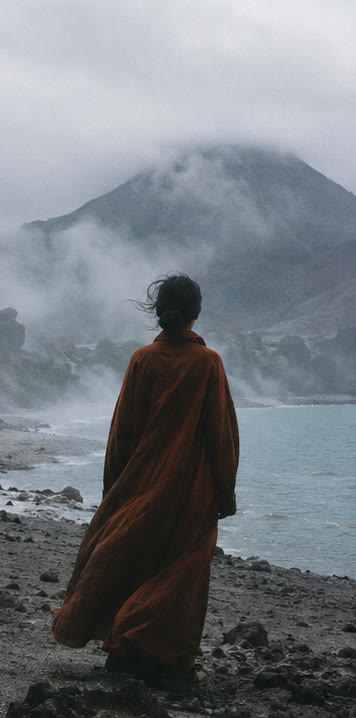
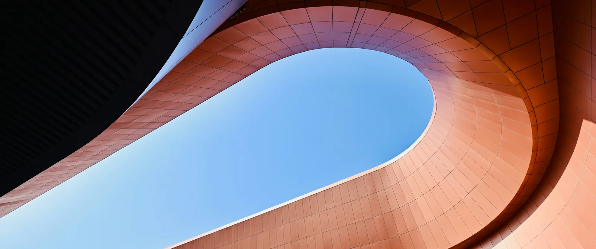
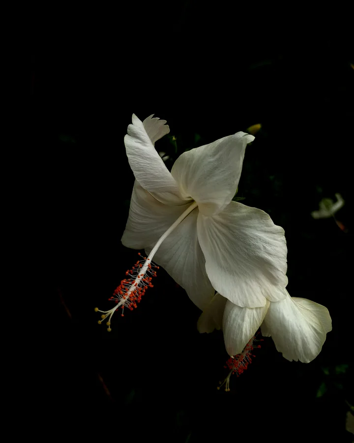
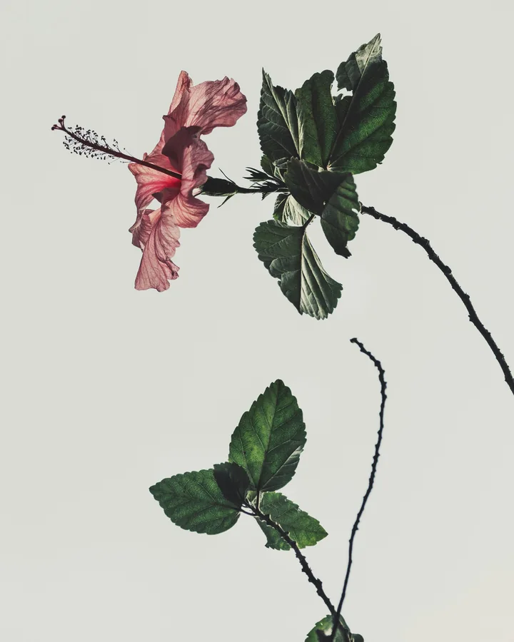
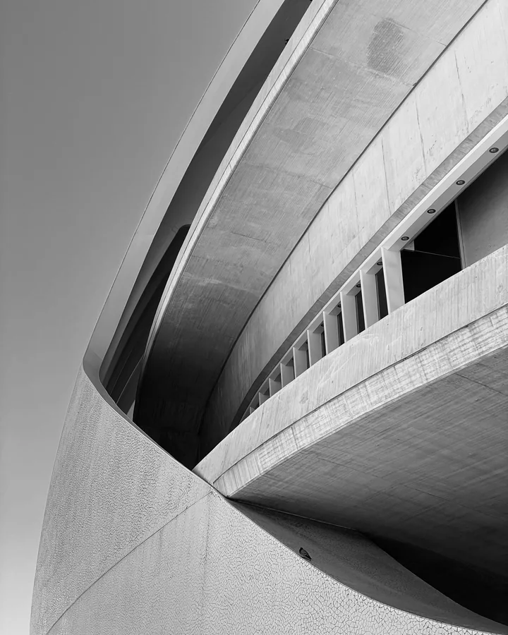
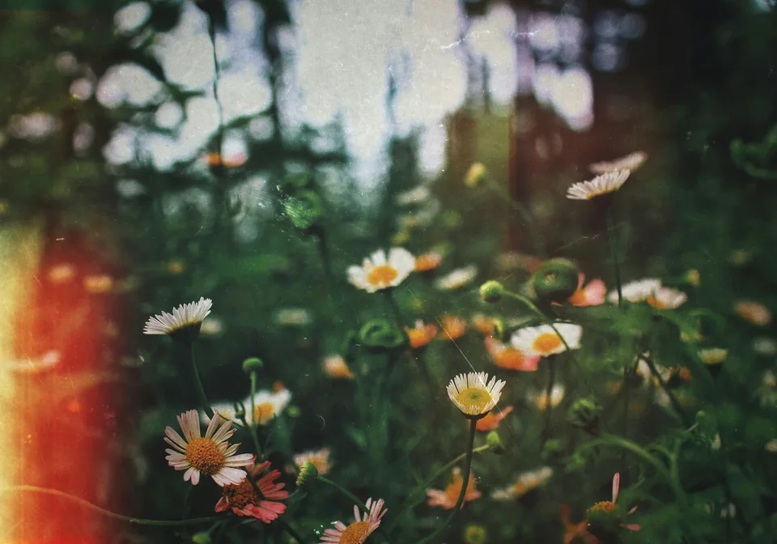
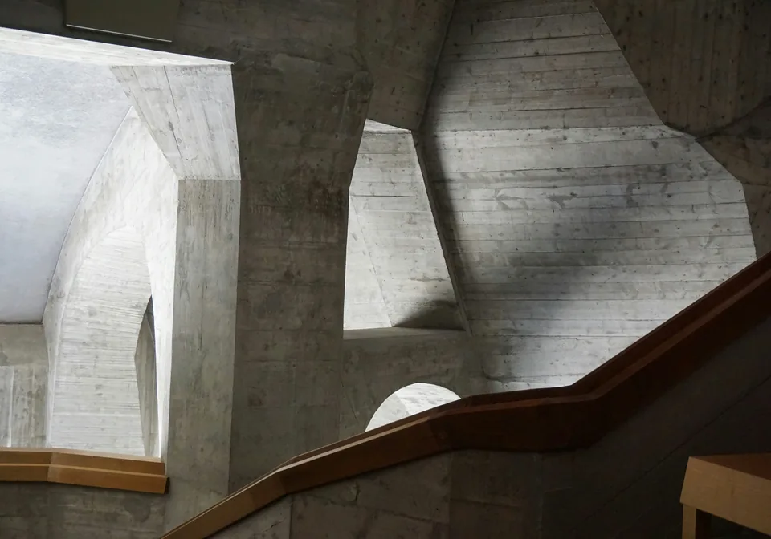
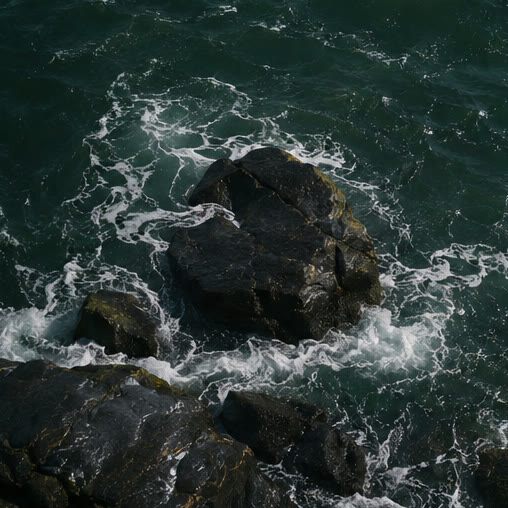
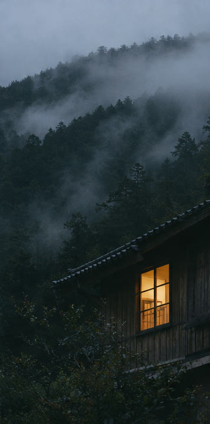

DIRECTED BY YOU · AUTUMN ISSUE
After the rain
A quiet 35mm camera, darkroom, and editorial studio—crafted for directional light, honest grain, and frames that linger.
A selection from the Flower and Architecture archives, where light traces the edges of petals, concrete, and glass.






“We built a camera that stays out of the way—so directional light, honest grain, and quiet space can carry the frame.”
Finished prints, film strips, and cinematic diptychs—with customizable titles, captions, 4 museum paper stocks, per-slot pan & zoom reframing, and 2K export.



Yes. You can take a photo or import one from your iPhone library, adjust its look in Develop, and arrange it in Compose. Your photos and finished pieces are available in Roll, and you can export at standard quality while signed out.
Sign in when you want to publish a recipe or access Trouvaille Pro.
Trouvaille processes your photos on your iPhone. When you save or share an export, you choose where it goes.
A published recipe contains the settings for a film look and profile attribution. People with the link can view that information, while the source photo stays on your device. The Privacy Policy explains how Trouvaille handles account and purchase data.
Pro adds Dual Preset, which lets you layer two looks, and full-resolution photo export in Develop. The camera, standard editing tools, and composition layouts are available without Pro.
Pro plans include monthly and yearly subscriptions and a one-time Lifetime purchase. The Trouvaille Pro screen shows the plans, billing periods, and prices provided by the App Store for your region.
Sign in to Trouvaille and go to Profile → Trouvaille Pro → Restore Purchases. Make sure your iPhone is using the Apple Account that made the original purchase.
You can manage or cancel a subscription from your Apple Account. See the Terms & Conditions for details on renewal, cancellation, and refunds.
While signed in, go to Profile → Delete Account and confirm. This removes your Trouvaille account, creator profile, and published recipes. You can remove photos and compositions from Roll separately.
If you have a subscription, manage it through Apple to stop future renewals. The Privacy Policy explains what happens to your data and how to contact support if you cannot sign in.